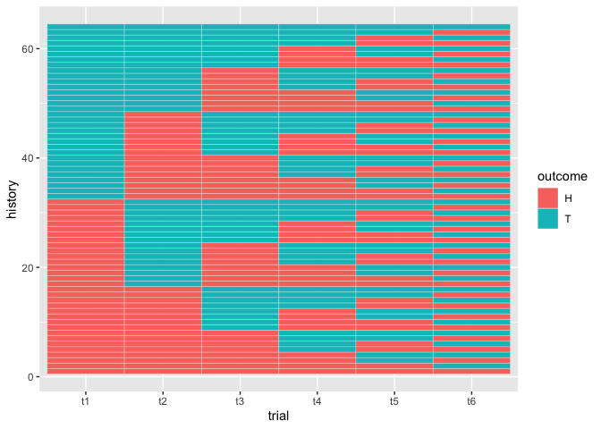
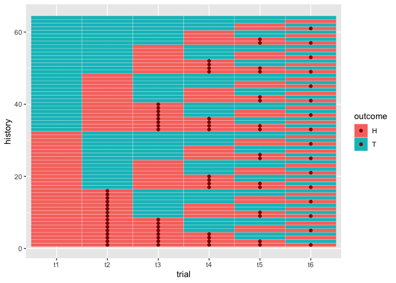
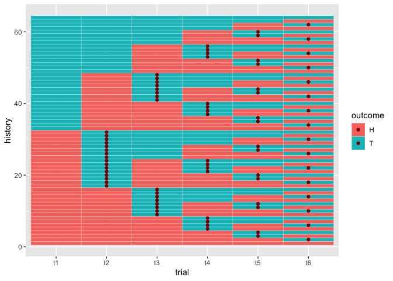
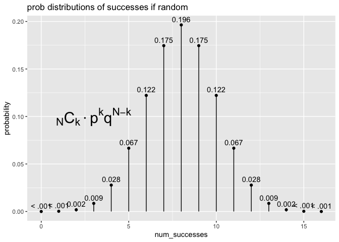

The goal of tidybernoulli creates a framework work with independent, repeated trials in an intuitive, fluid, and computation-friendly way.
A Bernoulli trial is an independent trial with two outcomes (usually success and a failure), where probabilities associated with each new trial are independent of previous trials.
Instead of looking at the realization of single trials and trials histories, we look at probability distributions that are generated by adding Bernoulli trials. Data frames that are generated contain a row for each outcome history and two columns for each trial index – one column with the trial outcome and one column with the associated probability.
Once all the outcome-probability pathways have been built up, summary functions allow us to ask questions about global outcomes; e.g. how likely are we to observe at least one success in 5 fair coin flips. Students will be able to see distributions like the binomial distribution emerge from first principles.
tidybernoulli was inspired by and is complementary to ma206distributions which treats common discrete probability distributions consistent with data requirements for use in with ggplot2 and the rest of the tidyverse.
Installation
You can install the development version of tidybernoulli from GitHub with:
# install.packages("devtools")
devtools::install_github("EvaMaeRey/tidybernoulli")Then load the package.
library(tidybernoulli)Single trials
We provide some single Bernoulli trial functions
bernoulli_trial()
#> outcome prob
#> 1 0 0.75
#> 2 1 0.25
weighted_coin()
#> outcome prob
#> 1 tails 0.25
#> 2 heads 0.75
fair_coin()
#> outcome prob
#> 1 tails 0.5
#> 2 heads 0.5As well as few non-bernoulli events and probabilities
prize_wheel()
#> outcome prob
#> 1 $0 9 of 12 slices
#> 2 $1 2 of 12 slices
#> 3 $3 1 of 12 sliceMultiple trials
This is a basic example which shows you how to solve a common problem:
## basic example code
bernoulli_trial()
#> outcome prob
#> 1 0 0.75
#> 2 1 0.25
trial_init() |>
add_trials()
#> # A tibble: 4 × 5
#> history t1_outcome t1_prob t2_outcome t2_prob
#> <int> <dbl> <dbl> <dbl> <dbl>
#> 1 1 0 0.75 0 0.75
#> 2 2 0 0.75 1 0.25
#> 3 3 1 0.25 0 0.75
#> 4 4 1 0.25 1 0.25
trial_init() |>
add_trials() |>
add_trials()
#> # A tibble: 8 × 7
#> history t1_outcome t1_prob t2_outcome t2_prob t3_outcome t3_prob
#> <int> <dbl> <dbl> <dbl> <dbl> <dbl> <dbl>
#> 1 1 0 0.75 0 0.75 0 0.75
#> 2 2 0 0.75 0 0.75 1 0.25
#> 3 3 0 0.75 1 0.25 0 0.75
#> 4 4 0 0.75 1 0.25 1 0.25
#> 5 5 1 0.25 0 0.75 0 0.75
#> 6 6 1 0.25 0 0.75 1 0.25
#> 7 7 1 0.25 1 0.25 0 0.75
#> 8 8 1 0.25 1 0.25 1 0.25Summarizing possible outcome histories
library(magrittr)
trial_init(prob = .3) %>%
add_trials() %>%
add_trials() %>%
.$out %>%
sum_across() %>%
prod_across()
#> # A tibble: 8 × 9
#> global_probs global_…¹ history t1_ou…² t1_prob t2_ou…³ t2_prob t3_ou…⁴ t3_prob
#> <dbl> <dbl> <int> <dbl> <dbl> <dbl> <dbl> <dbl> <dbl>
#> 1 0.343 0 1 0 0.7 0 0.7 0 0.7
#> 2 0.147 1 2 0 0.7 0 0.7 1 0.3
#> 3 0.147 1 3 0 0.7 1 0.3 0 0.7
#> 4 0.063 2 4 0 0.7 1 0.3 1 0.3
#> 5 0.147 1 5 1 0.3 0 0.7 0 0.7
#> 6 0.063 2 6 1 0.3 0 0.7 1 0.3
#> 7 0.063 2 7 1 0.3 1 0.3 0 0.7
#> 8 0.027 3 8 1 0.3 1 0.3 1 0.3
#> # … with abbreviated variable names ¹global_outcome, ²t1_outcome, ³t2_outcome,
#> # ⁴t3_outcome
library(magrittr)
bernoulli_trial(prob = .5) %>%
trial_init() %>%
add_trials() %>%
add_trials() %>%
add_trials(5) %>%
.$out %>%
sum_across() %>%
prod_across()
#> # A tibble: 256 × 19
#> global_probs global…¹ history t1_ou…² t1_prob t2_ou…³ t2_prob t3_ou…⁴ t3_prob
#> <dbl> <dbl> <int> <dbl> <dbl> <dbl> <dbl> <dbl> <dbl>
#> 1 0.00391 0 1 0 0.5 0 0.5 0 0.5
#> 2 0.00391 1 2 0 0.5 0 0.5 0 0.5
#> 3 0.00391 1 3 0 0.5 0 0.5 0 0.5
#> 4 0.00391 2 4 0 0.5 0 0.5 0 0.5
#> 5 0.00391 1 5 0 0.5 0 0.5 0 0.5
#> 6 0.00391 2 6 0 0.5 0 0.5 0 0.5
#> 7 0.00391 2 7 0 0.5 0 0.5 0 0.5
#> 8 0.00391 3 8 0 0.5 0 0.5 0 0.5
#> 9 0.00391 1 9 0 0.5 0 0.5 0 0.5
#> 10 0.00391 2 10 0 0.5 0 0.5 0 0.5
#> # … with 246 more rows, 10 more variables: t4_outcome <dbl>, t4_prob <dbl>,
#> # t5_outcome <dbl>, t5_prob <dbl>, t6_outcome <dbl>, t6_prob <dbl>,
#> # t7_outcome <dbl>, t7_prob <dbl>, t8_outcome <dbl>, t8_prob <dbl>, and
#> # abbreviated variable names ¹global_outcome, ²t1_outcome, ³t2_outcome,
#> # ⁴t3_outcomeFurther summary based on outcome of interest…
library(dplyr)
#>
#> Attaching package: 'dplyr'
#> The following objects are masked from 'package:stats':
#>
#> filter, lag
#> The following objects are masked from 'package:base':
#>
#> intersect, setdiff, setequal, union
bernoulli_trial(prob = .5) %>%
add_trials() %>%
add_trials() %>%
add_trials() %>%
add_trials(3) %>%
.$out %>%
sum_across() %>%
prod_across() %>%
group_by(global_outcome) %>%
summarize(probs = sum(global_probs))
#> # A tibble: 8 × 2
#> global_outcome probs
#> <dbl> <dbl>
#> 1 0 0.00781
#> 2 1 0.0547
#> 3 2 0.164
#> 4 3 0.273
#> 5 4 0.273
#> 6 5 0.164
#> 7 6 0.0547
#> 8 7 0.00781Cross-validate work
dbinom(x = 0:7, size = 7, prob = .5)
#> [1] 0.0078125 0.0546875 0.1640625 0.2734375 0.2734375 0.1640625 0.0546875
#> [8] 0.0078125or…
bernoulli_trial(prob = .5) |>
add_trials() |>
add_trials() |>
to_tsibble() |>
group_by(history) |>
summarize(hist_prob = prod(prob),
count_successes = sum(outcome),
paths = paste(outcome, collapse = ",")) |>
arrange(count_successes) |>
group_by(count_successes) |>
summarize(count_prob = sum(hist_prob))
#> # A tibble: 4 × 2
#> count_successes count_prob
#> <dbl> <dbl>
#> 1 0 0.125
#> 2 1 0.375
#> 3 2 0.375
#> 4 3 0.125drob quick job on veridical paradox
A #tidyverse simulation to demonstrate that if you wait for two heads in a row, it takes 6 flips on average, while you wait for a heads then a tails, it takes 4 flips on average
library(tidyverse)
#> ── Attaching core tidyverse packages ──────────────────────── tidyverse 2.0.0 ──
#> ✔ forcats 1.0.0 ✔ readr 2.1.4
#> ✔ ggplot2 3.4.1 ✔ stringr 1.5.0
#> ✔ lubridate 1.9.2 ✔ tibble 3.2.0
#> ✔ purrr 1.0.1 ✔ tidyr 1.3.0
#> ── Conflicts ────────────────────────────────────────── tidyverse_conflicts() ──
#> ✖ tidyr::extract() masks magrittr::extract()
#> ✖ dplyr::filter() masks stats::filter()
#> ✖ dplyr::lag() masks stats::lag()
#> ✖ purrr::set_names() masks magrittr::set_names()
#> ℹ Use the conflicted package (<http://conflicted.r-lib.org/>) to force all conflicts to become errors
# drob
crossing(trial = 1:1000,
flip = 1:100) %>%
mutate(heads = rbinom(n(), 1, .5)) %>%
group_by(trial) %>%
mutate(next_flip = lead(heads),
hh = heads & next_flip,
ht = heads & !next_flip) %>%
summarise(first_hh = which(hh)[1] + 1,
first_ht = which(ht)[1] + 1) %>%
summarise(first_hh = mean(first_hh),
first_ht = mean(first_ht))
#> # A tibble: 1 × 2
#> first_hh first_ht
#> <dbl> <dbl>
#> 1 5.90 3.93It’s about the second chances…
options(pillar.print_max = Inf)
fair_coin(outcome_set = c("T", "H")) %>%
select(-prob) %>%
trial_init() %>%
add_trials() %>%
add_trials() %>%
add_trials() %>%
add_trials() %>%
add_trials() %>%
to_tsibble() %>%
group_by(history) %>%
ggplot() +
aes(y = history, x = trial) +
geom_tile(color = "white") +
aes(fill = outcome) ->
baseplot; baseplot
baseplot +
geom_point(data = . %>% filter( outcome == "H" & lag(outcome) == "H"), color = "darkred") 
baseplot +
geom_point(data = . %>% filter( outcome == "T" & lag(outcome) == "H"), color = "darkred")
16 dolphin trials
bernoulli_trial(prob = .5) |>
add_trials() |>
add_trials() |>
to_tsibble() |>
group_by(history) |>
summarize(hist_prob = prod(prob),
count_successes = sum(outcome),
paths = paste(outcome, collapse = ",")) |>
arrange(count_successes) |>
group_by(count_successes) |>
summarize(prob = sum(hist_prob))
#> # A tibble: 4 × 2
#> count_successes prob
#> <dbl> <dbl>
#> 1 0 0.125
#> 2 1 0.375
#> 3 2 0.375
#> 4 3 0.125
options(scipen = 10)
bernoulli_trial(prob = .5) |>
add_trials(15) |>
to_tsibble() |>
group_by(history) |>
summarize(hist_prob = prod(prob),
count_successes = sum(outcome),
paths = paste(outcome, collapse = ",")) |>
arrange(count_successes) |>
group_by(count_successes) |>
summarize(prob = sum(hist_prob))
#> # A tibble: 17 × 2
#> count_successes prob
#> <dbl> <dbl>
#> 1 0 0.0000153
#> 2 1 0.000244
#> 3 2 0.00183
#> 4 3 0.00854
#> 5 4 0.0278
#> 6 5 0.0667
#> 7 6 0.122
#> 8 7 0.175
#> 9 8 0.196
#> 10 9 0.175
#> 11 10 0.122
#> 12 11 0.0667
#> 13 12 0.0278
#> 14 13 0.00854
#> 15 14 0.00183
#> 16 15 0.000244
#> 17 16 0.0000153
collapse <- function(x, collapse = ", "){
paste(x, collapse = collapse)
}
bernoulli_trial(prob = .5, outcome_set = c("nope", "fish")) |>
add_trials(15) |>
to_tsibble() %>%
group_by(history) %>%
summarise(history = collapse(outcome),
sum_successes = sum(outcome == "fish"),
prob = prod(prob)) %>%
group_by(sum_successes) %>%
summarise(prob = sum(prob))
#> # A tibble: 17 × 2
#> sum_successes prob
#> <int> <dbl>
#> 1 0 0.0000153
#> 2 1 0.000244
#> 3 2 0.00183
#> 4 3 0.00854
#> 5 4 0.0278
#> 6 5 0.0667
#> 7 6 0.122
#> 8 7 0.175
#> 9 8 0.196
#> 10 9 0.175
#> 11 10 0.122
#> 12 11 0.0667
#> 13 12 0.0278
#> 14 13 0.00854
#> 15 14 0.00183
#> 16 15 0.000244
#> 17 16 0.0000153Generalizing and simplifying to binomial equation…
ma206equations::typeset_eq_binomial()
#> ${{_N}C{_k}} \cdot p^kq^{N-k}$
ma206equations::typeset_eq_choose()
#> $n!\(r!*(n-r)!)${{_N}C{_k}} \cdot pkq{N-k}
where
C = n!\(r!*(n-r)!)
Quick viz…
ma206distributions::tidy_dbinom(num_trials = 16, single_trial_prob = .5) %>%
ggplot() +
aes(x = num_successes,
y = probability) +
ma206distributions::geom_lollipop(annotate = TRUE) +
labs(title = "prob distributions of successes if random") +
ma206equations::stamp_eq_binomial(x = 3, y = .1, size = 8)
Peek into internals of tidybernoulli
readLines("R/bernoulli-trial.R")[150:200]
#> [1] " # objects"
#> [2] " trial = NULL,"
#> [3] " index = NULL,"
#> [4] " out = NULL,"
#> [5] " out_ts = NULL,"
#> [6] " as_ts = FALSE,"
#> [7] ""
#> [8] ""
#> [9] " # functions"
#> [10] " init = function(trial = NULL){"
#> [11] ""
#> [12] " self$trial <- trial"
#> [13] " self$index <- 1"
#> [14] ""
#> [15] " self$out <- cross_trials(self$trial,"
#> [16] " num_trials = self$index) |>"
#> [17] " dplyr::mutate(history = dplyr::row_number()) |>"
#> [18] " dplyr::select(.data$history, dplyr::everything())"
#> [19] ""
#> [20] " invisible(self) #returns"
#> [21] ""
#> [22] ""
#> [23] " },"
#> [24] ""
#> [25] " update = function(increment = 1){ # a method"
#> [26] ""
#> [27] " self$index <- self$index + increment"
#> [28] ""
#> [29] " # displaying"
#> [30] " self$out <- cross_trials(self$trial, num_trials = self$index) |>"
#> [31] " dplyr::mutate(history = dplyr::row_number()) |>"
#> [32] " dplyr::select(.data$history, dplyr::everything())"
#> [33] ""
#> [34] " invisible(self) #returns"
#> [35] ""
#> [36] " },"
#> [37] ""
#> [38] " to_time_series = function(as_ts = FALSE){"
#> [39] ""
#> [40] " self$as_ts <- as_ts"
#> [41] ""
#> [42] " },"
#> [43] ""
#> [44] " print = function() { # print method; default is to print everything"
#> [45] ""
#> [46] " if(self$as_ts){"
#> [47] ""
#> [48] " print("
#> [49] ""
#> [50] " self$out |>"
#> [51] " tidyr::pivot_longer ("